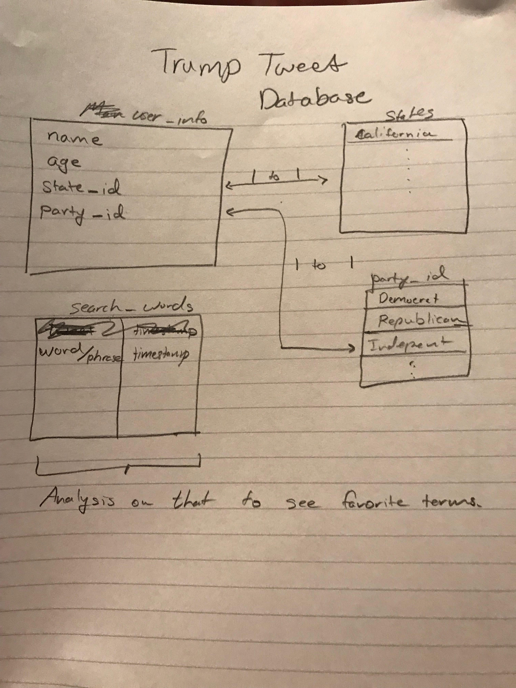

Trump Tweet Search
- Topic: My website would allow a user to search a word or phrase and see if Trump had tweeted about it.
- Audience: My intended audience would be anyone who is politically engaged and wants to learn more about our president’s thought patterns. Also, for people to get a laugh about gag words that Trump has used.
-
Color Scheme: The Website will consist of all the official Twitter colors which can be found here: https://designpieces.com/2012/12/twitter-colour-palette/
Websites that inspired me:
- Scope: It’ll be a single page application. The first section will be the search bar where it prompts the user to search for the words or phrase that they would like to see. Once the user submits a search it will display more results below the search results. Below the results there would be an about page describing the purpose of the website. Finally, below the about section there will be either a contact us page or a section that shows the most searched terms/phrases.
- Database Aspect: My website is going to be database driven because users will have the option to register so that they can store their favorite searches. Additionally, everything that anyone searches will be recorded so then we can have a counter of the most searched words/phrases on the website. The kind of data that will be storing would be the user's name and the strings of their searches. Data is coming from user.
